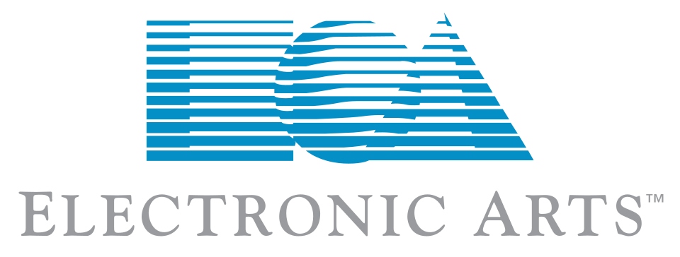

홈 > 브랜드 매거진 > Electronic Arts
Electronic Arts
일렉트로닉 아츠(EA)는 1982년 설립된 미국의 비디오 게임 기업으로, 두 글자 'EA' 모노그램 마크로 오랫동안 인지되어 왔다. 2025년 리브랜딩은 스튜디오 Instrument가 맡았다.
산업 분야 브랜드·비즈니스 · 공개 등급 편집 검수 · 브랜드 평가 4 ★

한눈에 보는 브랜드
일렉트로닉 아츠(EA)는 1982년 설립된 미국의 비디오 게임 기업으로, 캘리포니아 레드우드시티에 본사를 둔다. 두 글자 'EA'를 결합한 모노그램 마크로 오랫동안 인지되어 왔으며, 스포츠를 비롯한 다양한 게임 포트폴리오를 보유한 대형 퍼블리셔로 성장했다.
브랜드 관점
Electronic Arts 항목은 기업 연혁보다 시각 아이덴티티의 완성도를 읽는 데 적합한 자료입니다. Big Brands 분류 안에서 어떤 브랜드가 로고, 타입, 컬러, 아트 디렉션, 애플리케이션을 하나의 시스템으로 묶는지 보여주며, 산업 정보와 별도로 BI/CI 디자인 레퍼런스 축을 형성합니다.
공개 메타데이터와 에셋 요약을 기준으로 아이덴티티 구조를 확인할 수 있습니다.
브랜드 아이덴티티
2025년 Instrument가 주도한 리브랜딩은 EA를 전통적 게임 퍼블리셔에서 다이내믹한 엔터테인먼트 기업으로 재포지셔닝하는 것을 목표로, 기존 상징 형태에 새로운 차원을 탐색해 헤리티지를 계승하면서 전진감을 강조했다. 타이포그래피는 Electronic Arts Display를 Serif·Mono·Text 스타일을 갖춘 동적 시스템으로 확장했고, 색상은 헤리티지 블루를 중심에 두되 그 주위에 다채로운 팔레트를 구축해 EA가 대표하는 다양한 플레이를 담았다.
모션 툴킷, 커스텀 아이콘 라이브러리, 서브브랜드 시스템 등 확장 가능한 디자인 체계를 함께 마련했다.
제품과 서비스
Electronic Arts 항목의 제품·서비스 정보는 일반 상품 카탈로그가 아니라 브랜드 아이덴티티 산출물 기준으로 정리됩니다. 전체 에셋 23개, 이미지 9개, 영상 14개, 로컬 저장 이미지 9개를 통해 정지 이미지와 영상 에셋의 비중을 확인할 수 있고, 이는 로고 적용, 컬러 시스템, 캠페인 톤, 패키지 또는 공간 적용 가능성을 검토하는 출발점이 됩니다.
사람들
타임라인
BI/CI 변천사
확인된 BI/CI 이미지가 아직 없습니다.